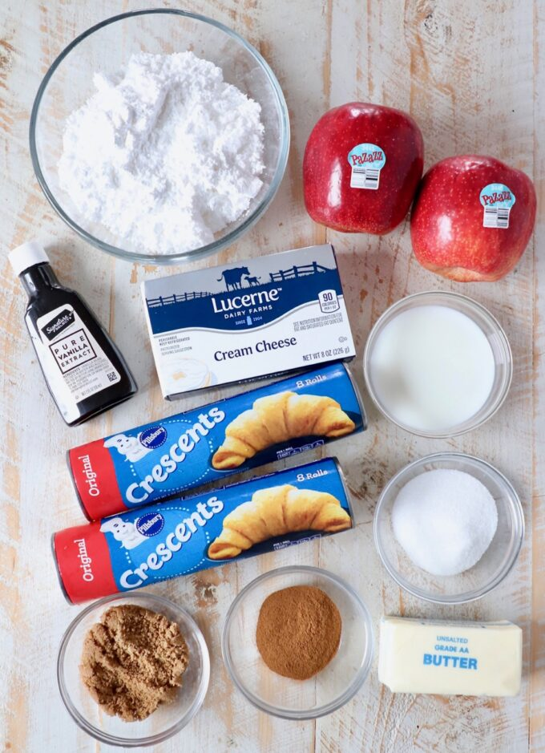

Ingredients you’ll need
| Crescent roll dough | you can use canned crescent roll dough, or sheets of canned crescent dough. Either will work, the sheets of dough are simply a little easier to work with because you don’t need to press the crescent roll perforations together. |
|---|---|
| Granulated sugar | Brown sugar |
| Ground cinnamon | |
| Unsalted butter | you’ll want the butter and cream cheese softened prior to making the recipe, so I recommend removing them from the refrigerator at least 30 minutes before starting the recipe, so they can come up to room temperature. |
| Pazazz apples | I purchased the apples at Vons in my area, click here to find out where you can buy these sweet, tart and extra crispy apples in your area! |
| Cream cheese | |
| Milk | |
| Vanilla extract | |
| Powdered sugar |